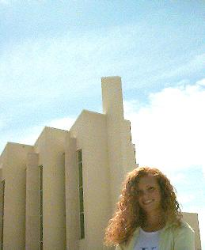

John Taylor Building |
|
| The John Taylor Building is the newest building on campus. This facility was completed during the summer of 1997. The Taylor building is home to the Religion and Humanities departments. This building features a 2,000 seat chapel/auditorium and is used by one of the five campus LDS stakes. |  |